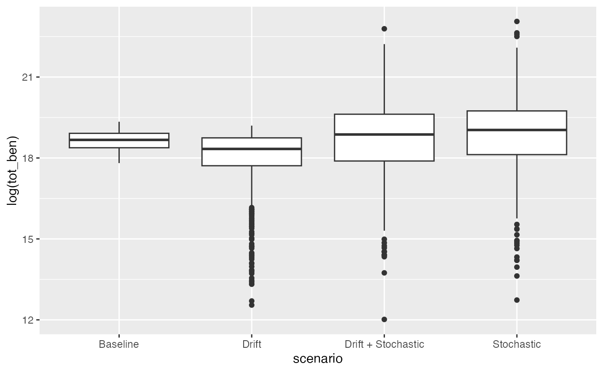
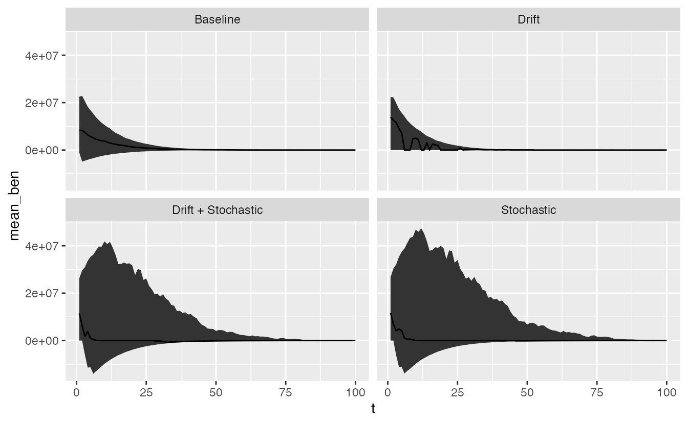

a02_time_varying_prices.RmdTo implement changes in prices over time, we can modify the three
following arguments. If either price_linear_change or
price_cv is set to non-zero values, then dynamic prices are
turned on in the simulation framework.
sim(...,
price_linear_change = 0,
price_acf = 0.7,
price_cv = 0)We can demonstrate this by first running a scenario as a baseline,
df_baseline = sim(rec_std = 0.05)And then we can add 3 scenarios for comparison. First, we’ll simulate the effects of a deterministic price decline of -0.01. This is the drift in log space, so that
\[ log(p_{t}) = log(p_{t-1}) + u \]
such that \(u = -0.01\).
df_det = sim(rec_std = 0.05, price_linear_change = -0.01)Second, we’ll fit a stochastic model without drift (\(u = 0\)). For this model,
\[ log(p_{t}) = log(p_{t-1}) + \delta_t, \\ \delta_t \sim N(0,\sigma) \]
df_stoch = sim(rec_std = 0.05, price_cv = 0.1)Third, we’ll fit a model that combines the stochastic variation with drift.
df_comb = sim(rec_std = 0.05, price_cv = 0.1, price_linear_change = -0.01)We want to summarize the total net benefits, and estimates of recruitment across these scenarios.
First, we can combine all of the individual results in a dataframe.
df_baseline$scenario = "Baseline"
df_det$scenario = "Drift"
df_stoch$scenario = "Stochastic"
df_comb$scenario = "Drift + Stochastic"
df = rbind(df_baseline, df_det, df_stoch, df_comb)We can look at total net benefits across scenario. This is shown in log-space because the stochastic models have a lot of uncertainty,
df_summary = mutate(df,
net_ben = discount*net_benefits) %>%
group_by(scenario, sim) %>%
summarise(tot_ben = sum(net_ben))
#> `summarise()` has grouped output by 'scenario'. You can override using the
#> `.groups` argument.
ggplot(df_summary, aes(scenario, log(tot_ben),group=scenario)) +
geom_boxplot()
We could also look at making time series of benefits over time for each scenario. To do this, we can summarize across time slices,
df_summary = mutate(df,
net_ben = discount*net_benefits) %>%
group_by(scenario, t) %>%
summarise(mean_ben = median(net_ben),
lo = quantile(net_ben,0.025),
hi = quantile(net_ben,0.975))
#> `summarise()` has grouped output by 'scenario'. You can override using the
#> `.groups` argument.
ggplot(df_summary, aes(t, mean_ben)) +
geom_ribbon(aes(ymin=lo, ymax = hi)) +
geom_line() +
facet_wrap(~scenario)